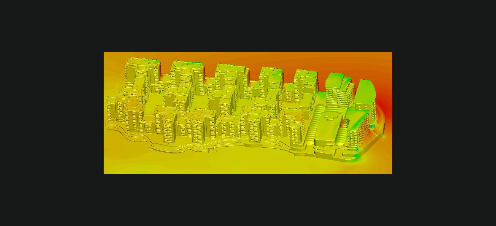
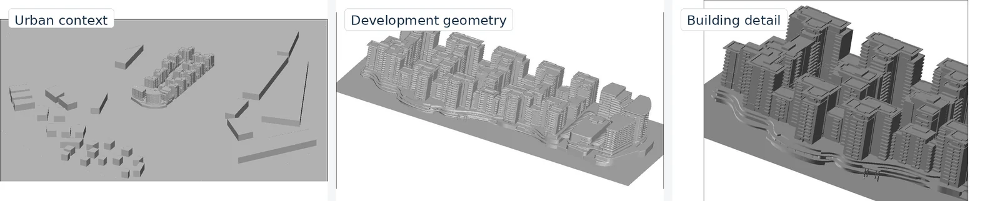
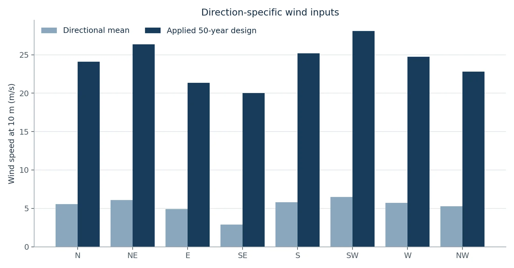
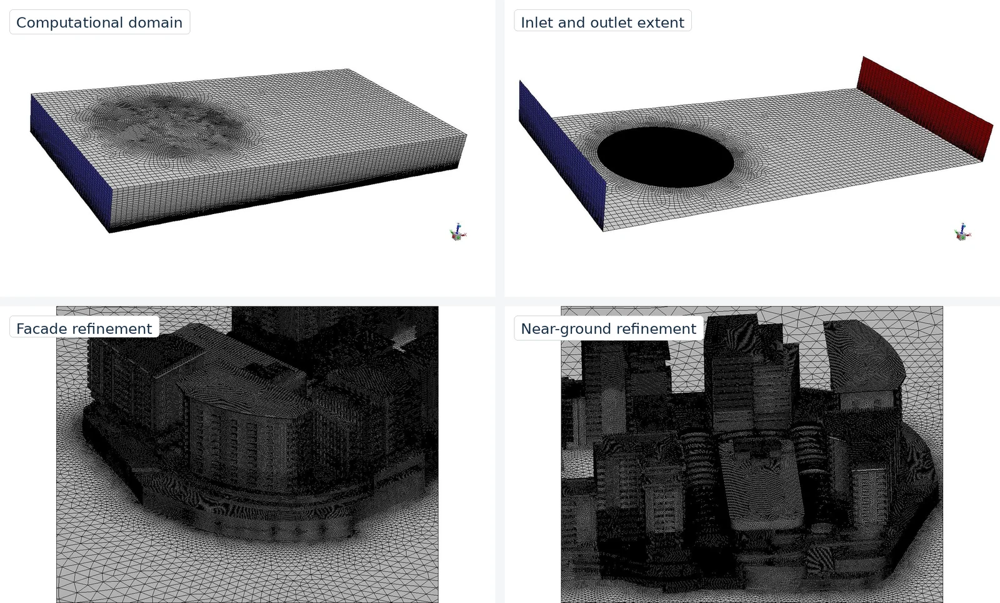
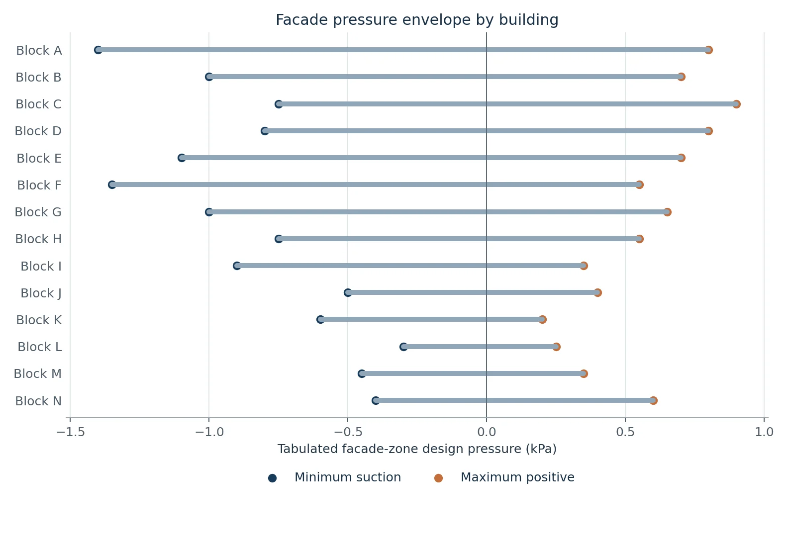
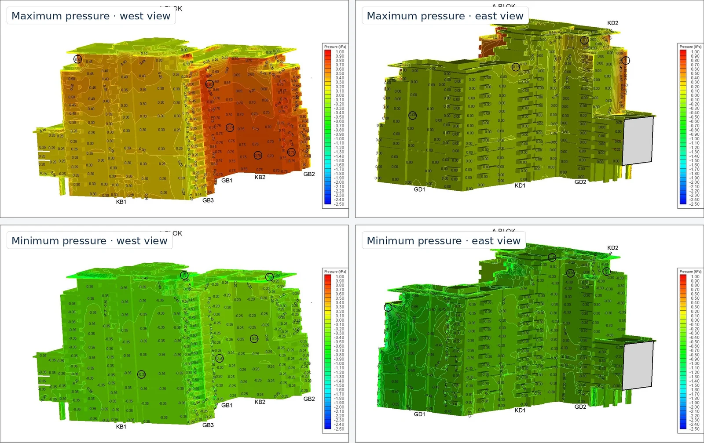
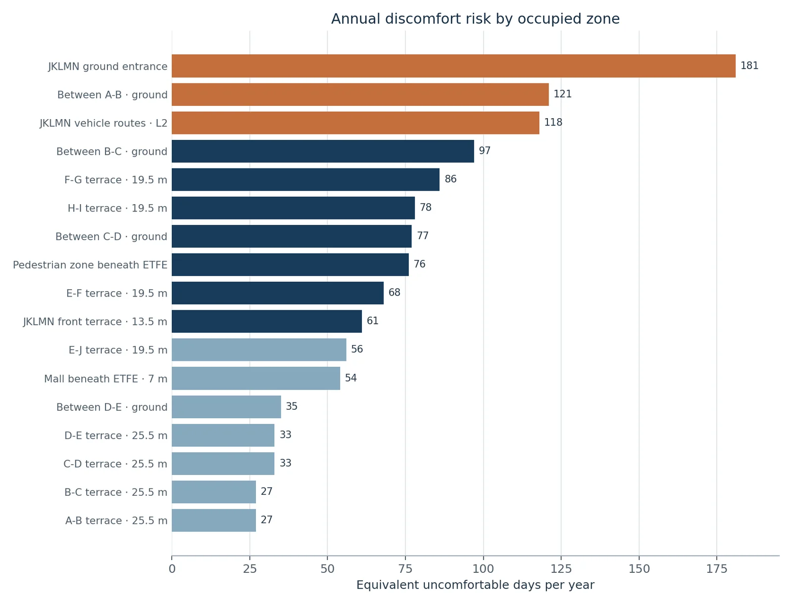
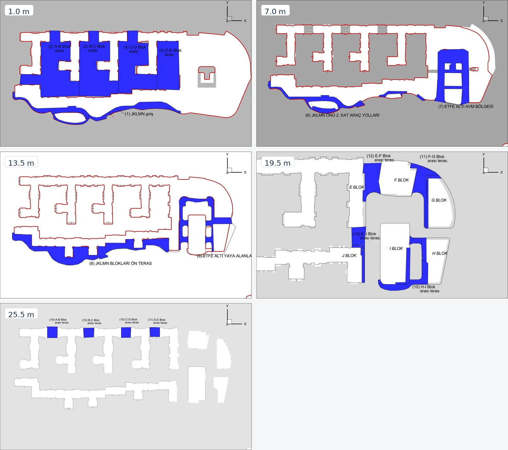
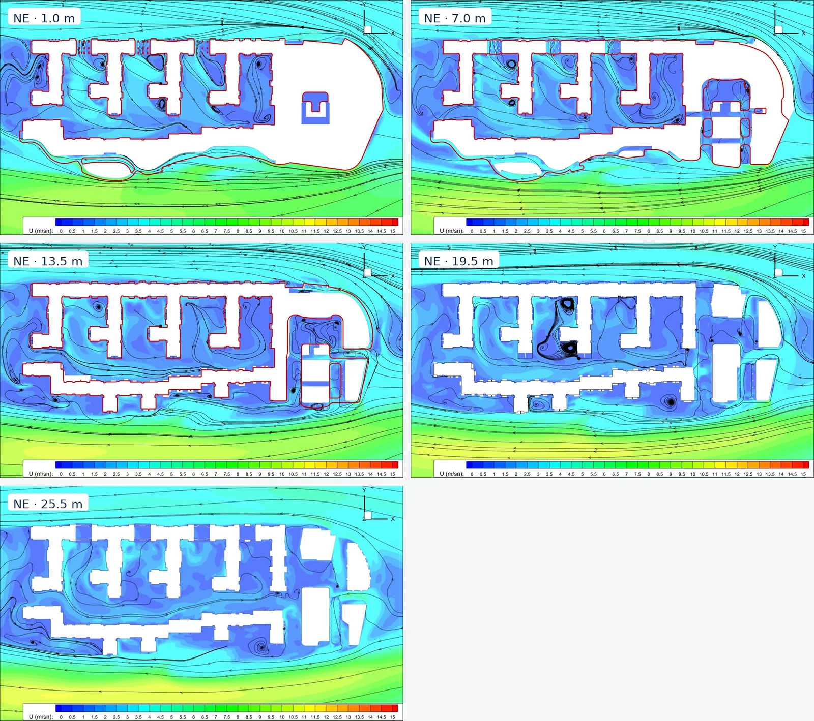
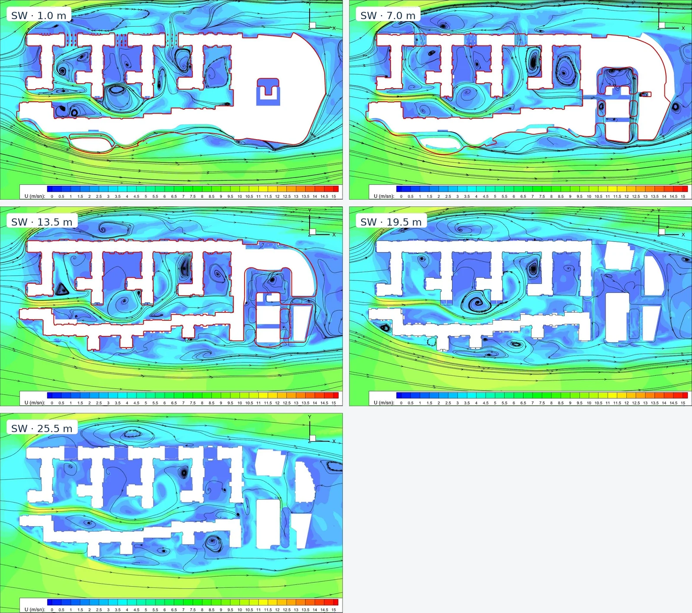

Structural question
Which positive pressure and suction should govern each facade zone after all eight wind directions are considered?
Engineering case study · 2022
Eight directional wind cases turned one urban CFD model into two design outputs: a facade pressure envelope and an annual comfort-risk map.
The original project and approval identities have been removed. The 2022 simulations were not rerun for this portfolio edition; current standards and design assumptions require confirmation before construction use.

The facade needed an extreme pressure envelope for building-envelope development. People at entrances, passages, vehicle routes, and terraces needed a probability-based picture of everyday exposure.
Which positive pressure and suction should govern each facade zone after all eight wind directions are considered?
Where does the urban form accelerate wind often enough to create recurring discomfort?
The complete development, surrounding buildings, an extended flow domain, and occupied zones at five elevations.
Prepare the geometry and CFD model, establish the directional inputs, interpret pressure and velocity fields, and document the design response.

Climate, geometry, numerical resolution, and exposure were kept connected so each output could be traced back to a documented assumption.
What changes the wind before it reaches the site?
Nearby buildings were retained where they could shield the development, accelerate flow through passages, or alter the wake.
Output · One mesh-ready model for the project and its relevant surroundings.
Is one wind speed enough?
No. Wind frequency and power information were used to derive a mean speed for north, northeast, east, southeast, south, southwest, west, and northwest.
Output · Eight climate conditions instead of one generic site input.
How should rare wind events enter the model?
A Rayleigh method converted each directional climate into a documented 50-year design speed. Applied values ranged from 20.00 to 28.10 m/s at 10 m.
Output · A direction-specific extreme input for every compass case.
Where can the mesh change the answer?
Approximately 40 million tetrahedral cells were concentrated near facades, edges, the ground, and occupied zones, with a coarser outer domain.
Output · Practical domain size with local resolution around design-critical geometry.
Which direction governs each surface?
The highest positive pressure and most severe suction were selected independently at every facade zone across all eight simulations.
Output · A zone-by-zone pressure schedule from −1.40 to +0.90 kPa.
How often does local acceleration matter?
Local mean velocity in each comfort zone was combined with directional wind frequency and the source study's 6 m/s discomfort threshold.
Output · Equivalent uncomfortable days per year for 17 zones on five horizontal planes.
Where should design effort go first?
The exposed JKLMN entrance and the repeated ground-level corridors ranked above naturally protected upper terraces.
Output · A mitigation sequence tied to entrances, circulation, and occupied edges.


A single windward-versus-leeward diagram would have hidden the real load pattern. Corners, roof edges, returns, and recesses moved the controlling case around the development.
Governing suction
Block A · zone GD1
Governing positive pressure
Block C · zone GB4


The scheduled values are useful for facade development only when they remain connected to current elevations, tributary areas, internal-pressure assumptions, load combinations, and the governing code edition.
The same development produced sharply different outcomes. Ground-level entrances and passages concentrated flow, while upper terraces benefited from shielding and local geometry.

Highest exposure
| Zone | Days/year |
|---|---|
| JKLMN ground entrance | 181 |
| Passage between A–B | 121 |
| JKLMN Level 2 routes | 118 |
Lowest exposure
| Zone | Days/year |
|---|---|
| Terrace between A–B | 27 |
| Terrace between B–C | 27 |
| Terraces between C–E | 33 |



The source study pointed to porous, staggered, and planted interventions rather than one solid barrier. The goal is to reduce local acceleration while preserving access, visibility, and useful shielding.
Once local velocity was combined with wind frequency, the model became a design-priority map: entrance first, circulation corridors next, protected terraces last.
The portfolio edition preserves the original calculations and makes their limits explicit. A current design-stage study should now test sensitivity, compliance, and the proposed mitigation.
Professional English report
The anonymized 2022 study has been rewritten as a focused 20-page report with the wind-climate method, CFD setup, facade schedule, comfort calculations, decision path, recommendations, and limitations.